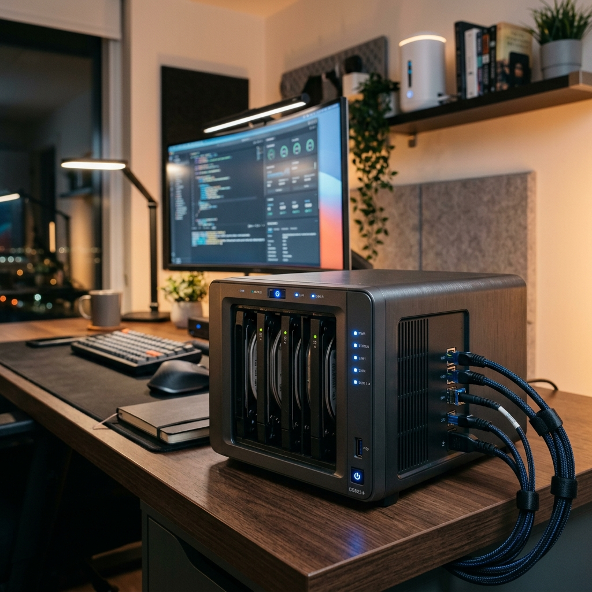
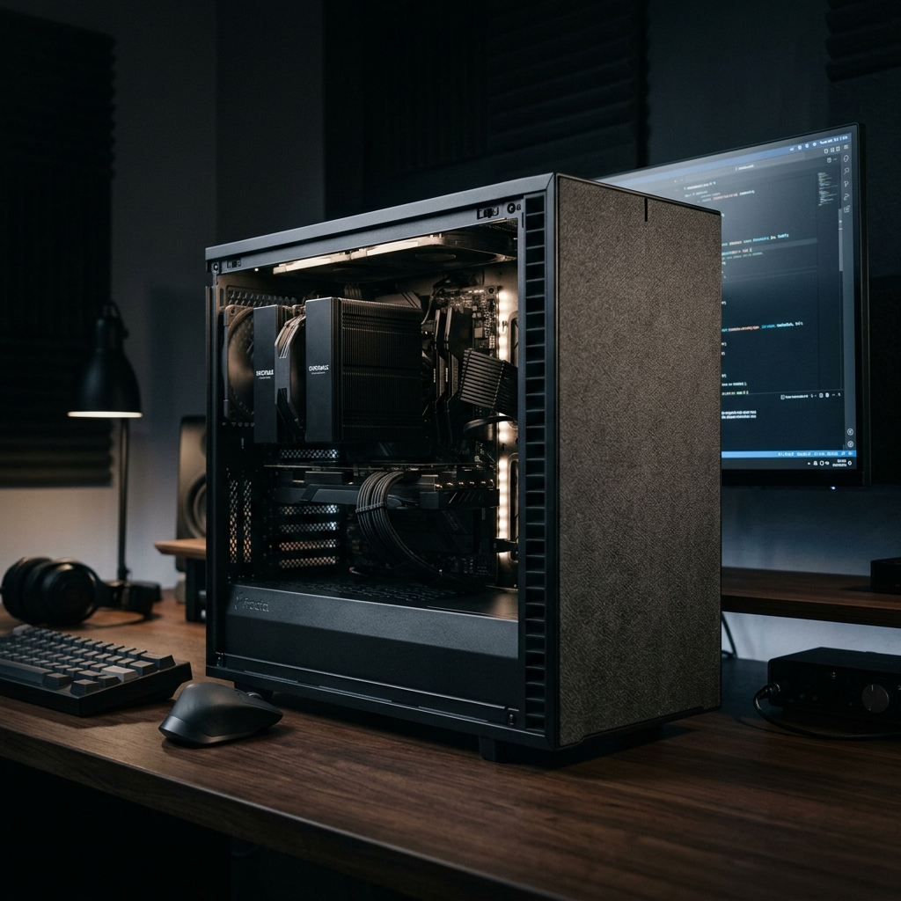
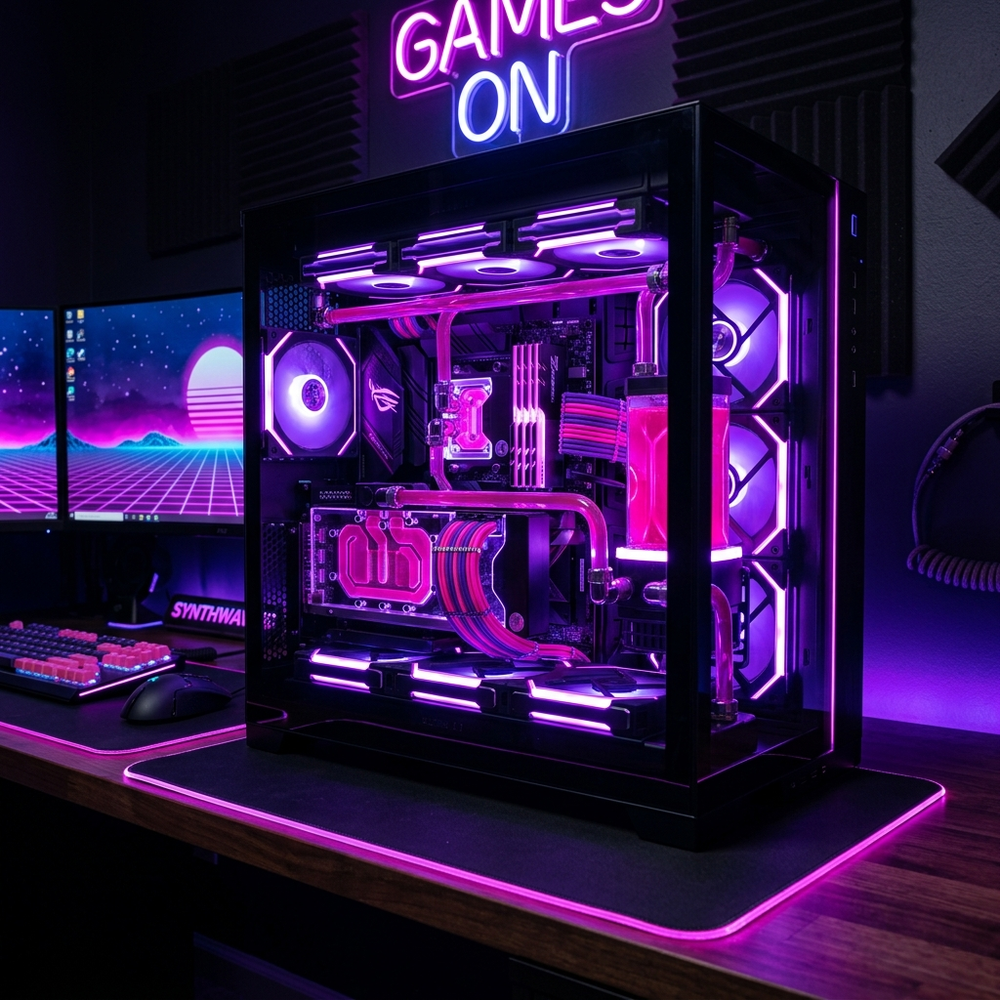

Ultimate Mini-ITX Build 2026
Building a high-performance PC in a compact form factor has never been more exciting. This guide covers the best Mini-ITX cases that support triple-slot GPUs, high-speed DDR5 RAM, and efficient cooling solutions. We dive deep into thermal management strategies, cable routing in tight spaces, and selecting the right SFX power supply to handle modern high-wattage components without sacrificing silence.

Custom Loop Water Cooling 101
Take your PC's aesthetics and performance to the next level with a custom water cooling loop. This comprehensive guide walks you through selecting blocks, pumps, reservoirs, and radiators. We discuss the pros and cons of hard tubing vs. soft tubing, how to properly leak test your system, and the maintenance routines required to keep your loop running clean for years. Perfect for enthusiasts looking to squeeze every drop of performance from their hardware.

Mastering PC Cable Management
A clean build isn't just about looks; it's about airflow and ease of maintenance. Learn the professional secrets to managing cables in any chassis. We cover the use of Velcro ties, cable combs, and routing paths that minimize clutter. From handling the bulky 24-pin ATX connector to the tiny front panel headers, this guide ensures your next build looks like it was done by a pro, even in cases with limited behind-the-tray space.

Building Your Own Home NAS
Stop relying on expensive cloud storage and build your own Network Attached Storage (NAS). This guide explains how to repurpose old PC hardware or build a low-power, dedicated server for your files, media, and backups. We compare popular operating systems like TrueNAS and Unraid, explain RAID configurations for data redundancy, and show you how to set up remote access so your data is available anywhere in the world securely.

The Silent PC Build Guide
Noise can be the most distracting part of a powerful PC. This guide focuses on components designed for near-silent operation. We review noise-optimized cases with sound-dampening foam, fanless power supplies, and high-performance air coolers that outperform liquid AIOs in acoustics. Learn how to set custom fan curves in BIOS and use undervolting techniques to keep your system cool and quiet even under heavy gaming loads.

Best $800 Gaming Build 2026
You don't need to spend thousands for a great gaming experience. Our $800 build guide prioritizes price-to-performance, selecting the best mid-range GPUs and CPUs that can handle 1440p gaming with ease. We look at the secondary market for great deals, discuss which components you should never buy used, and provide a clear path for future upgrades as your budget grows. High frame rates at a reasonable price point start here.

Video Editing Workstation Guide
Professional video editing requires a different balance of hardware than gaming. This guide breaks down the importance of multi-core CPU performance, high RAM capacity for massive 4K and 8K timelines, and fast NVMe storage for scratch disks. We recommend the best workstations GPUs that offer hardware acceleration for codecs and discuss the benefits of color-accurate monitors and professional-grade peripherals for creative workflows.

Setting Up Your First Home Lab
Ready to take your networking and sysadmin skills to the next level? A home lab is the perfect playground. We guide you through selecting rack-mount hardware, setting up virtualization environments with Proxmox or ESXi, and managing your own local network services like Pi-hole, Plex, and Home Assistant. Learn about power requirements, cooling a small server room, and organizing your networking gear like a professional data center.

Mastering PC Aesthetics & RGB
RGB lighting can either make your build look premium or like a unicorn threw up. This guide teaches you how to coordinate lighting effects using advanced software controllers. We discuss the ecosystem differences between Corsair, NZXT, and Lian Li, and show you how to use external lighting to complement your PC's internal glow. From custom-sleeved cables to vertically mounted GPUs, learn how to create a visually stunning centerpiece for your desk setup.

Building a Modern Retro PC
Experience the classics with a modern twist. This guide shows you how to build a PC specifically for emulation and retro gaming. We discuss the best CPUs for high-speed single-threaded tasks required by older emulators, selecting low-latency controllers that feel just like the originals, and setting up frontend software like LaunchBox or RetroArch for a seamless console-like experience. Rediscover your favorite games in high resolution with modern conveniences.